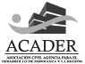
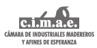
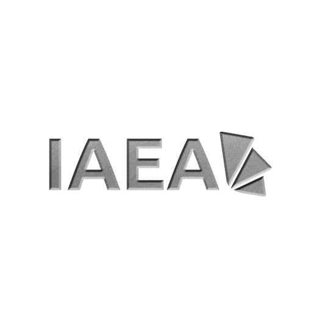
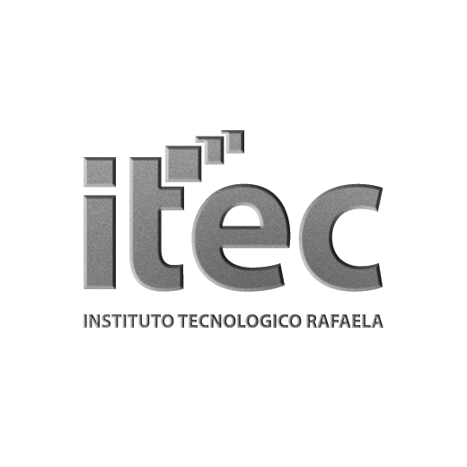

INET
Instituto Nacional de Educación Tecnológica
Sitio oficial de INET, abre otra pestañaEsta sección presenta el mapa de articulación institucional del ITEC, con organizaciones agrupadas por alcance nacional, provincial y regional.
Instituto Nacional de Educación Tecnológica
Sitio oficial de INET, abre otra pestañaPresidencia de la Nación
Sitio oficial del Ministerio de Trabajo, abre otra pestañaPresidencia de la Nación
Sitio oficial del Ministerio de Ciencia, abre otra pestañaPresidencia de la Nación
Sitio oficial del Ministerio de Producción, abre otra pestañaRed Argentina de Cooperación para la Educación Tecnológica y la Formación Profesional
En una experiencia de Formación de Formadores, el ITEC fue sede de un encuentro de la Red con docentes de otros centros.

Potenciando Innovación
Sitio oficial de la Red de Centros, abre otra pestañaProvincia de Santa Fe
Sitio oficial de la Secretaría de Energía de Santa Fe, abre otra pestañaProvincia de Santa Fe
Sitio oficial del área de Ciencia y Tecnología de Santa Fe, abre otra pestañaProvincia de Santa Fe
Sitio oficial del Ministerio de la Producción de Santa Fe, abre otra pestañaProvincia de Santa Fe
Sitio oficial del Ministerio de Educación de Santa Fe, abre otra pestaña
Asociación Civil Agencia para el Desarrollo de Esperanza y su Región
El ITEC integra ACADER junto con gobiernos locales, cámaras e instituciones de la región para impulsar el desarrollo regional y la cooperación público-privada.
Sitio oficial de ACADER, abre otra pestaña
Cámara de Industriales Madereros y Afines de Esperanza
El ITEC articuló con CIMAE, CICAE y el municipio de Esperanza en el Proyecto Polo Textil, con actividades de formación para el sector y emprendedores.
Sitio oficial de CIMAE, abre otra pestañaCámara de Industriales Metalúrgicos de Esperanza – Las Colonias
El ITEC y CIME participan en la Mesa de Soldadura, un espacio de trabajo conjunto sobre las necesidades de formación del sector metalúrgico.
Sitio oficial de CIME, abre otra pestañaIncubadora de empresas de ámbito regional
En 2024, el ITEC presentó a IDEAR como un proyecto junto con la Municipalidad de Esperanza y la Universidad Nacional del Litoral para acompañar iniciativas emprendedoras.
Sitio oficial de IDEAR, abre otra pestañaEsperanza, Santa Fe
En 2016, el ITEC firmó junto con la Provincia de Santa Fe, la Municipalidad de Esperanza y la Universidad Nacional del Litoral un acta de compromiso para constituir el Polo Tecnológico, con el objetivo de impulsar el desarrollo socioeconómico de la región.
El programa surgió para sistematizar la vinculación entre el ITEC y las empresas de Esperanza, reconociendo a las firmas comprometidas con la educación y la formación.
Conocé el programa Empresas que Educan, abre otra pestañaUna red que acerca formación, servicios tecnológicos y vinculación a empresas y trabajadores del sector metalúrgico, promoviendo la innovación y la cooperación.
En cursos de Formación Profesional del sector metalúrgico, el ITEC ha trabajado junto con CIME y con financiamiento de ADIMRA.
Explorá la Red de Centros de ADIMRA, abre otra pestaña Centro Tecnológico de Arteaga
Centro Tecnológico de Arteaga

IAEA
Instituto Tecnológico Rafaela ADIMER
ADIMER
 Cámara de Industriales Metalúrgicos y Autopartistas de Santa Fe
Cámara de Industriales Metalúrgicos y Autopartistas de Santa Fe
 CeFoSe · Formación y Servicios
CeFoSe · Formación y Servicios
 Centro Tecnológico José Censabella
Centro Tecnológico José Censabella